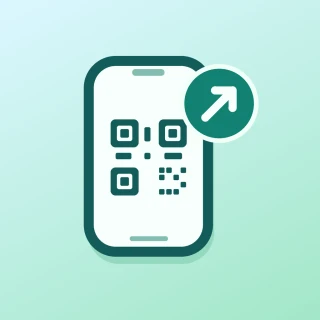
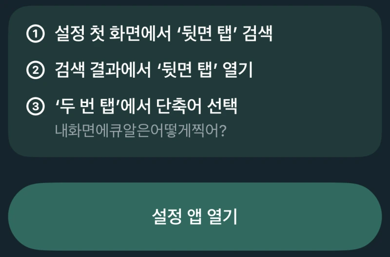

내화면에큐알은어떻게찍어?
아이폰 화면 속
QR 코드와 링크 열기
내 아이폰에 QR 코드가 떠 있거나 인스타그램에서 링크를 누를 수 없나요? 한 번 설정해 두면 화면을 그대로 띄운 채 아이폰 뒷면을 두 번 탭해 브라우저로 열 수 있어요.
설정 순서 보기
처음 한 번만 따라 해요
-
뒷면 두 번 탭에 연결하기
설정 앱 첫 화면에서 뒷면 탭을 검색해요. 검색 결과를 열고 두 번 탭 → 내화면에큐알은어떻게찍어?를 선택해요.
검색에 안 나오나요? 설정에서 손쉬운 사용 → 터치 → 뒷면 탭으로 들어가면 돼요.

앱에서 설정을 안내하는 화면
테스트 QR로 확인해요
이 QR 코드가 보이는 상태에서 아이폰 뒷면을 두 번 탭해요. 브라우저에서 example.com이 열리면 설정이 끝난 거예요.
주소 목록이 나오면 example.com을 선택해요.
어떤 화면에서 쓸 수 있나요?
내 아이폰 화면에 뜬 QR 코드는 어떻게 찍나요?
메시지나 웹페이지에 받은 QR 코드가 있다면, 코드 전체가 보이도록 화면에 띄우고 뒷면을 두 번 탭해요. 앱이 화면을 읽고 QR 코드에 담긴 웹 주소를 열어요.
인스타그램 게시글에서 눌리지 않는 링크는 어떻게 열어요?
게시글 설명을 펼쳐 웹 주소 전체가 화면에 보이게 한 뒤 뒷면을 두 번 탭해요. 주소가 여러 개 감지되면 목록에서 원하는 주소를 골라요.